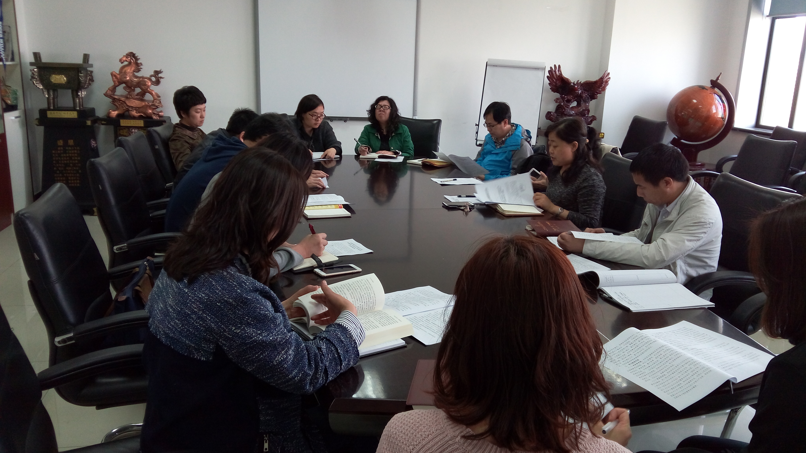

学院 · 动态
外国语学院召开“两学一做”工作研讨会
4月22日下午，外国语学院“两学一做”工作研讨会在综合楼1004召开。会议由学院党委书记赵彩清主持， 党委委员和各支部书记出席。

赵书记首先传达了东北大学“两学一做”学习教育部署会的主要精神， 并对《外国语学院关于在全院党员中开展“学党规党纪、学系列讲话，做合格党员”学习教育实施方案》进行解读，对相关工作进行安排和部署。
学院党委委员和各支部书记对《外国语学院关于在全院党员中开展“学党规党纪、学系列讲话，做合格党员”学习教育实施方案》进行了讨论， 并对做好我院“两学一做”学习教育提出了建议和意见。学院党委在充分吸纳与会人员意见建议的基础上，正式形成了《外国语学院关于在全院 党员中开展“学党规党纪、学系列讲话，做合格党员”学习教育实施方案》。
外国语学院将严格按照学校党委的要求，认真组织和完成“两学一做”教育学习的各项规定动作，并根据外国语学院实际， 开展形式多样的教育学习活动，确保将“两学一做”教育学习的各项要求落到实处、取得实效。